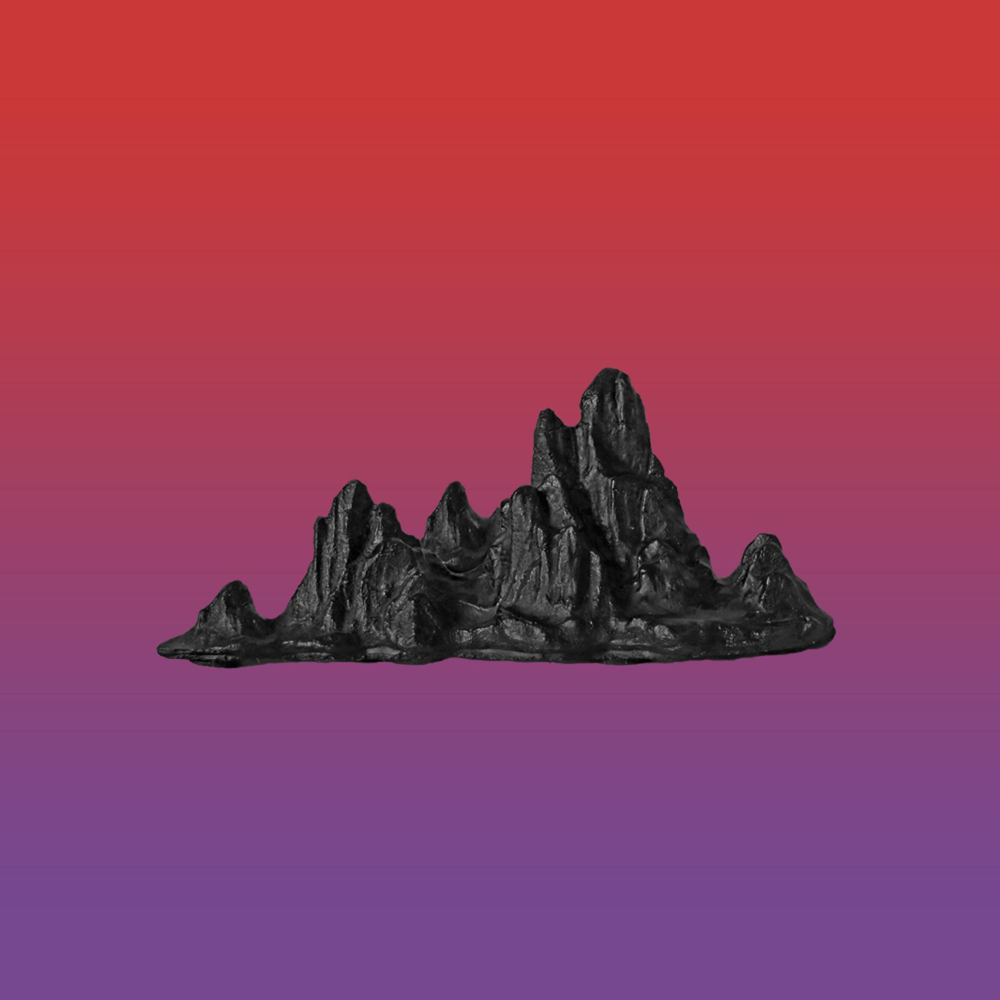

10月8日
大雨。
从昨天起，雨就一直在下。
尽管有着完善的排水系统，城市不少地方还是已经积起了水。
在楼下还听见老人们的议论：“这几年气候是越来越不对了。”
我打着伞出了门。
今天本来是不用出门的，但多年的老友白项之前送了我一张演唱会的票，邀请我一起过去，很不巧，日期就是今天。
“这么大的雨，估计没几个人会去吧。”
然而到了演出场地才发现，我完全低估了乐迷们的热情。
白项似乎早就料到了这样的场面，带着我从小道抄到了检票口，排了几十分钟的队之后，终于进入了现场。

演出的乐队叫“六鲜面馆”，好像是近年来兴起的一支独立摇滚乐队。
场馆的左侧挂着巨幅的海报，似乎是他们的专辑封面，渐变背景下的一座假山。
“别看来了这么多人，其实大家都是因为名气，真要问歌写的什么，谁也说不出个所以然。”白项看着台下狂欢的乐迷冷道。
“你现在准备怎样？”说罢，白项转头向我。
我知道，这才是他给我演唱会票的本意——知道了我的近况，想问我现在的决定。
“应该是不会再写了。”我苦笑。
“放弃了？”“嗯。”
白项没再说什么，只是安静地看着演出，和台下的热闹格格不入。
刚开始写小说的时候，我就和他说过，我一定会一直写下去，把我想表达的给表达出来。
还是那时候的我太过自信了吧。